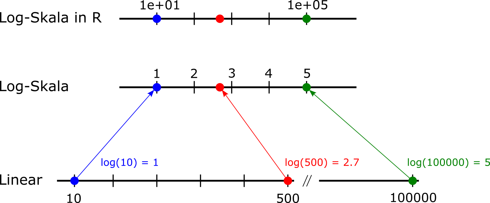
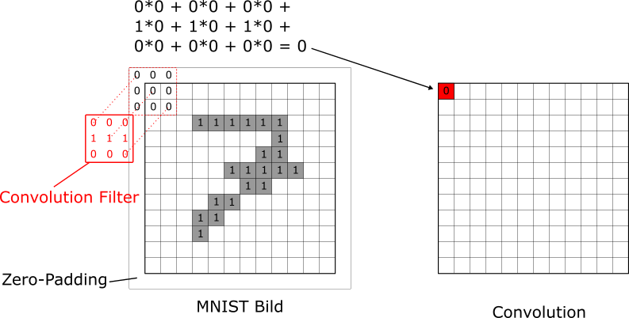
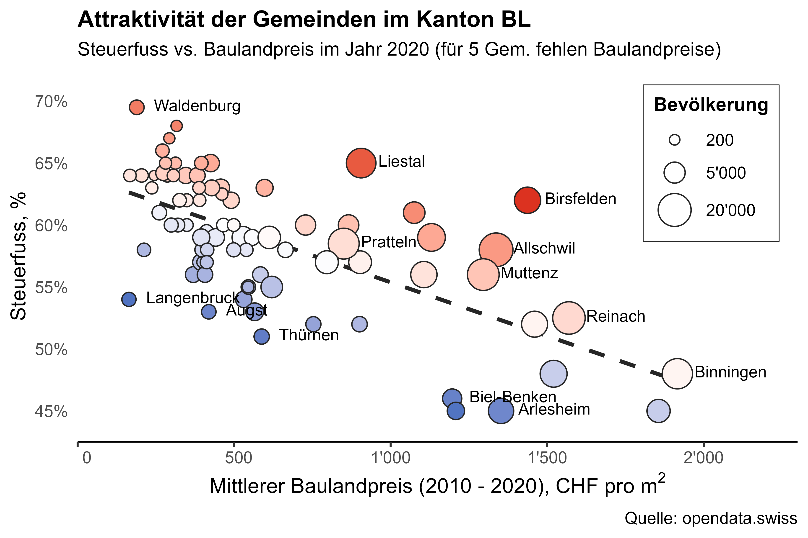
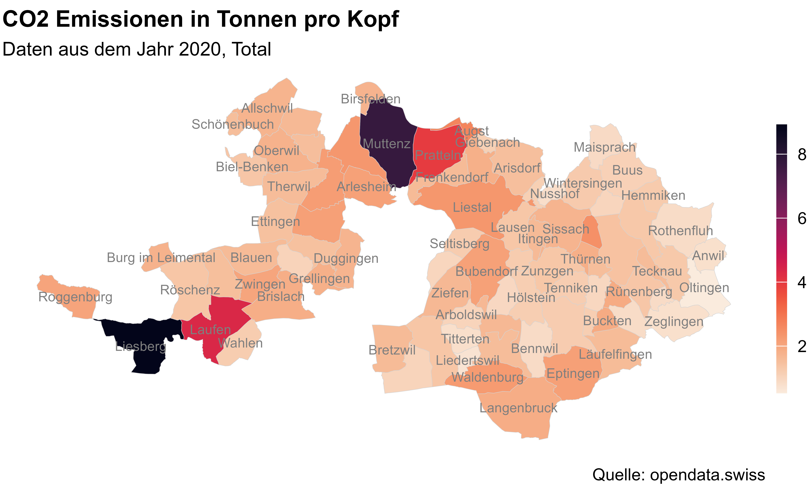
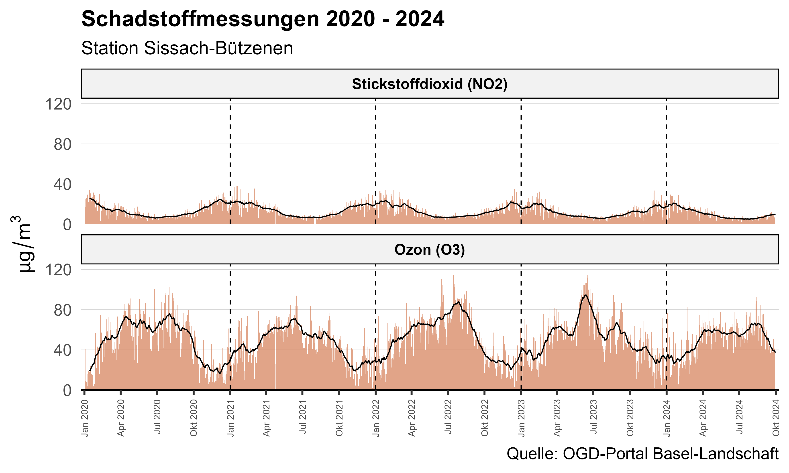

Teaching
My teaching at the University of Applied Sciences and Arts Northwestern Switzerland (FHNW) centers around three key modules, outlined below.
Machine Learning
This module is one of four within the Managerial Data Science specialization, available to both Business and International Management students at FHNW during the final year of their Bachelor’s studies.
Many students in this specialization have little to no prior programming experience and only a modest background in mathematics and statistics. Teaching a subject rooted in advanced concepts from both fields might seem daunting in this context. However, I view it as an exciting challenge. Over the years, several key decisions have proven particularly effective.
The first was to clearly position this module as applied Machine Learning. Our primary goal is to solve real-world problems using off-the-shelf models and algorithms. Every topic is introduced through practical examples—preferably from a business context—and accompanied by R code to demonstrate each model or technique.
The second decision was to avoid making this a no-math course. Instead, we explore mathematical concepts when they provide deeper insights into a model’s inner workings or enhance intuitive understanding. I believe that even students with a minimal math background can grasp complex topics if they are broken down into univariate or bivariate examples, where visualization is straightforward and the (linear) algebra remains simple.
Finally, I adopted a flipped classroom approach. Based on my experience, students learn best when they can explore new topics at their own pace, in a setting of their choice. To support this, I developed interactive online tutorials using the learnr package, featuring text, Shiny apps, visualizations, R code snippets, and occasional multiple-choice questions. In-class sessions are then dedicated to deepening the material, working through exercises together, and addressing questions or areas of particular interest.
Below are two visualizations I created to help clarify topics that students often find challenging.

The first illustrates the effect of using a log scale (base 10) versus a linear scale in R. It shows how three values (10, 500, and 100,000) are represented differently when plotted on a log scale. The figure should be interpreted from bottom to top.

The second visualization explains how a simple convolution filter operates using a simplified (binary) MNIST image of a handwritten digit. I manually designed an image of the number 7 to clearly highlight the pixel-level computations during the convolution process.
Applied Data Science
The current topic of the Applied Data Science course (a week-long intensive course) is data visualization. This elective course is offered annually in November. In the course, we use the tidyverse framework, with a particular focus on the ggplot2 package to create visualizations.
To demonstrate the key principles of high-quality visualization, I wrote a bunch of code to generate engaging plots, all based on real data from the Swiss canton of Basel-Landschaft. This data is available on the canton’s open government data portal. The goal was to walk students through the essential steps of creating effective visualizations using a practical case study.
Some results from this case study are shown below. The first figure is a scatterplot illustrating the relationship between two quantitative variables—tax rates and land prices—and demonstrates how additional information can be integrated into the plot using point color and size.

The second figure presents CO2 emissions (in tons per capita) across all communities in the canton. This figure serves as an example of geographic visualization using a choropleth map.

Finally, the third figure showcases how to visualize time series data. Here, we display the daily measurements of nitrogen dioxide and ozone concentrations, as recorded by the monitoring station in Sissach-Bützenen.

Business Analytics
Business Analytics (BA) is one of two components of the core module Empirische Methoden und Business Analytics, which is mandatory for all Business students at FHNW.
The BA section is structured around two main areas of focus:
Introduction to R and Data Handling: Students begin by working with
Rand RStudio, gaining a basic understanding of key data structures such as vectors, factors, and data frames. They learn how to import data, manipulate these basic structures, and apply indexing. The course also covers the calculation of simple descriptive statistics and introducesR’s base plotting capabilities for data visualization.Fundamentals of Linear Regression: The second part of the course delves into simple and multiple linear regression. Students explore the intuition behind least-squares coefficients and learn how the coefficient of determination can be used for model evaluation and comparison. In the context of multiple linear regression, the course covers topics such as dummy encoding for categorical variables and the use of interaction terms, among other techniques.
This structure ensures that students not only develop a basic technical proficiency in data analysis using R but also gain a solid understanding of essential statistical modeling concepts.